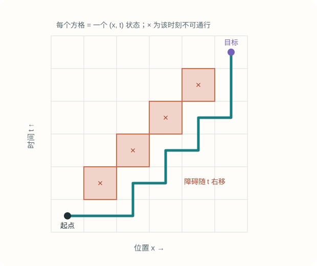
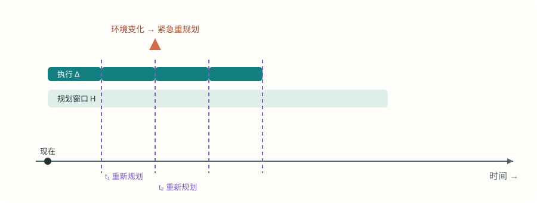
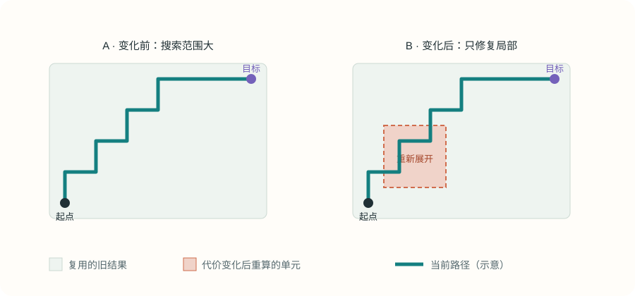

动态环境重规划：地图没变，路却不通了？
前 18 章大多假设世界在规划期间静止。真实世界里障碍会移动、会出现、会消失。本章讲规划器如何在环境变化后快速给出新路径：时空图、滚动窗口、增量搜索（LPA*/D* Lite），以及“预测”与“反应”之间的取舍。
静态路径为什么会失效
前面各章几乎都假设：规划时地图不变，机器人执行时地图也不变。一旦这个假设被打破，路径就不再是“一次算好、照着走”的对象。考虑一条穿过狭窄通道的最短路径：
- 规划时刻通道畅通，
g(goal)有限，路径被缓存下来； - 机器人走到一半，一个货架/车辆/行人占据了通道中段；
- 缓存路径上的某个节点此刻不可通行，原来“最优”的路径已经无解。
此时真正的失败不是“路径不好”，而是执行器仍在沿一条已经不存在的路径运动。这要求规划器在运行中持续感知、并在必要时改变路径——这就是重规划（replanning）。
“动态环境”具体指下列几类变化，它们的处理难度依次上升：
- 障碍出现或消失——离散的可行/不可行切换，最直观；
- 障碍连续移动——需要跟踪状态并预测未来位置；
- 其他智能体会互动——对方会根据你的动作调整（博弈性质），预测更难；
- 规划本身过期——即使没有新障碍，传感器更新或定位漂移也会让旧轨迹失准。
重规划与局部避障是两件事。第 16–17 章的 DWA/APF 处理“眼下几秒不要撞上”，重规划处理“变化之后还要不要再走原路径”。二者互补：局部方法负责即时安全，重规划负责恢复全局任务的可行性。
时空图：把时间变成一层
把时间显式建模，是最直接的办法。把二维栅格复制 T 份，第 t 层代表离散时刻 t，状态是三元组 (x, y, t)。相邻两层之间连边：机器人可以在 t 时刻位于 (x, y)，在 t+1 时刻移动到邻格；停在原地也是一条边。这样，一个在 t=3 会经过 (5,5) 的移动障碍，就变成第 3 层把 (5,5) 标记为阻塞——绕开一个动态障碍，就变成了在阻塞层里绕开一个静态障碍。
DYNAMIC · 19

代价是维度灾难。一张 100×100、时间窗 T=50 的图就有 5×105 个节点，还没算速度、朝向等状态维度。因此在工程里很少真的建完整时空图，而是改用下面更轻量的做法。
时空图与时间轴上的“预约”思想一致：只要每个机器人对每一个 (x,y,t) 只声明一次占用，冲突就可以在图上被消除。第 21 章的多机器人协调会回到这个概念。
滚动窗口：只规划眼前一段
滚动窗口规划（receding-horizon planning）不一次规划全程，而是只规划未来一小段，执行其中前几步后重新感知、重新规划：
- 感知当前局部环境（例如传感器量程范围内的障碍）；
- 在局部窗口内规划一段短期轨迹（例如未来几秒）；
- 只执行最先的一小段，然后回到第 1 步。
好处是问题规模被裁剪到可控范围：不需要知道很远处的细节。代价是它不能保证全局最优，且可能被局部信息引入死胡同——窗口太小，全局唯一出口在窗外时就会循环。因此窗口长度必须能覆盖“到达下一个决策点”所需的距离，而不是拍脑袋定一个数。
DYNAMIC · 19

下一个问题是什么时候触发重规划，常见三类策略：
- 定时——每固定间隔无条件重算，实现简单，但环境没变时也在消耗算力；
- 事件触发——只在检测到变化（路径被阻塞、目标更新）时重算，更省，但依赖可靠的变更检测；
- 混合——定时为主、检测到剧烈变化时紧急触发，工程中最常见。
常听到“自动驾驶必须在 200 ms 内完成感知→规划→控制的闭环”这类说法。它是一个经验法则/教学示意，取决于车速、制动距离与安全策略，并非某份论文给出的普适阈值。真正要算的是：以当前速度、在系统最坏反应时间内，车辆会前进多少距离，这个距离必须小于剩余安全间距。
增量重规划：LPA* 与 D* Lite
从零重规划有一个明显的浪费：环境只局部变化，却把整张图重新搜一遍。增量搜索利用上一次的搜索结果，只修复受影响的区域。代表算法是 LPA*（Lifelong Planning A*，Koenig & Likhachev 2001），它用两个量描述每个节点：
g(s)——当前已找到的从起点到s的最短代价估计；rhs(s)——基于前驱回推的“一步备选值”。
当所有节点的 g(s)= rhs(s) 时叫一致（consistent），路径就最优。一条边代价变了，只更新受影响节点的 rhs，把不一致的节点放回优先队列，直到终点重新一致。这就像向水面投石子，涟漪只传到需要修改的区域（图 19-3）。
DYNAMIC · 19

D* Lite 把 LPA* 的运行方向反过来：从终点向起点搜索，因此机器人向前移动时无需重新计算到新起点的启发值，更适合“边跑边规划”。第 9 章已经用它处理过动态环境中的重规划，可对照阅读。
增量搜索不降低正确性，但依赖一个前提：除被修改的边外，其余图结构保持有效。如果传感器一次性重建了大片地图，增量更新的优势会消失，此时从头规划反而更省事。
预测还是反应
面对移动障碍，有一个更深层的选择：先预测其他物体的运动再规划（predict-then-plan），还是只对当前观测做出反应（sense-then-react）？
- 基于预测：用恒定速度模型、卡尔曼滤波或学习型轨迹预测给出障碍未来位置，再作为约束入规划器。好处是“有远见”，可在行人横穿前提前减速；风险是预测可能不准，人会在最后一刻改主意。
- 基于反应：不假设行为模型，直接用当前传感器数据驱动局部规划，DWA 就是典型。计算量小、依赖少，但目光短浅，可能陷入局部振荡。
- 混合：工程中最常见——预测层给出预期轨迹，滚动窗口规划层优化路径，底层保留一个独立的“安全制动”机制，在规划层来不及响应时触发。
| 策略 | 核心机制 | 每次的额外计算 | 主要局限 |
|---|---|---|---|
| 从零重规划 | 检测到变化后重跑全局规划器 | 高（全图搜索） | 变化频繁时算力吃紧 |
| LPA* | 正向增量，只更新不一致节点 | 低（局部修复） | 需保存上次搜索状态 |
| D* Lite | 反向增量，适合边跑边规划 | 低（局部修复） | 同样需保存状态 |
| 滚动窗口 | 只在局部窗口内周期重规划 | 低（窗口受限） | 丢失全局最优，窗口过小会绕圈 |
“足够好且可执行”通常比“理论最优但已过期”更实用。先保证滚动窗口与安全制动正确，再在算力紧张时引入增量搜索，是更稳的工程路径。
交互：两种触发策略
同一个动态场景，用“定时”还是“事件触发”重规划，算力开销不同。下图的 10 个时间步里，障碍只在其中两步发生变化。切换策略，看哪些步真正触发了重规划。
定时重规划：10 个时间步里触发 10 次重算，环境未变的步也照算。
时间步数为教学示意，用于对比两种策略触发次数的差异，不代表任何真实系统指标。
可运行的增量重规划检查（Python 3.10+）
下面用标准库实现一个极简 LPA*：栅格中 1 表示障碍，0 表示可通行。第一次规划得到长度为 4 的路径；障碍被移走后，只更新受影响的节点并重算，一次得到更短的路径 2。把代码存成 lpa_demo.py，运行 python3 lpa_demo.py，两个断言应当通过。
import heapq # Python 3.10+
def neighbors(n, grid):
r, c = n
for dr, dc in ((-1,0),(1,0),(0,-1),(0,1)):
nr, nc = r + dr, c + dc
if 0 <= nr < len(grid) and 0 <= nc < len(grid[0]) and grid[nr][nc] == 0:
yield (nr, nc)
class LPAStar:
def __init__(self, grid, start, goal):
self.grid, self.start, self.goal = grid, start, goal
self.g, self.rhs = {}, {}
self.rhs[start] = 0
self.open = [(self.key(start), start)]
def h(self, n):
return abs(n[0]-self.goal[0]) + abs(n[1]-self.goal[1])
def key(self, n):
m = min(self.g.get(n, float('inf')), self.rhs.get(n, float('inf')))
return (m + self.h(n), m)
def update(self, n):
if n != self.start:
self.rhs[n] = min(self.g.get(p, float('inf')) + 1 for p in neighbors(n, self.grid))
if self.g.get(n, float('inf')) != self.rhs.get(n, float('inf')):
heapq.heappush(self.open, (self.key(n), n))
def compute(self):
while self.open:
k, u = heapq.heappop(self.open)
if k > self.key(u):
continue # 陈旧条目
if self.g.get(u, float('inf')) == self.rhs.get(u, float('inf')):
continue # 已一致
if self.g.get(u, float('inf')) > self.rhs.get(u, float('inf')):
self.g[u] = self.rhs[u]
else:
self.g[u] = float('inf')
self.update(u)
for s in neighbors(u, self.grid):
self.update(s)
return self.g.get(self.goal, float('inf'))
grid = [[0, 1, 0], [0, 0, 0], [0, 0, 0]] # 1 = 障碍
tool = LPAStar(grid, (0, 0), (0, 2))
assert tool.compute() == 4 # 绕过障碍：4 步
grid[0][1] = 0 # 障碍被移走
tool.update((0, 1))
for nb in neighbors((0, 1), grid):
tool.update(nb)
assert tool.compute() == 2 # 增量修复后：2 步
print("LPA* incremental repair: 4 -> 2")
关键在 update：它只把 rhs 发生变化的节点重新入队，compute 也只展开这些不一致的节点，其余 g/rhs 直接复用。这就是增量重规划相对于“从零重规划”省下来的部分。本例是确定性教学示意，不代表真实机器人场景下的性能。
来源与实现参照
- Koenig, Likhachev & Furcy (2004), Lifelong Planning A*, Artificial Intelligence 155(1–2)——LPA* 的 g/rhs 一致性与增量更新。
- Koenig & Likhachev (2002), D* Lite, AAAI——反向增量搜索，面向移动机器人的重规划。
- LaValle, Planning Algorithms——时间维规划、滚动窗口与增量搜索背景。
边界条件
- 时空图的规模：节点数随位置数与时间层数相乘增长，时间分辨率越细、窗口越长，代价越高；必要时先用粗时间层规划，再做局部细化。
- 滚动窗口不保证全局最优：窗口太短时，全局唯一出口可能在窗外，导致原地绕圈（活锁）。窗口长度应能覆盖到达下一个决策点的距离。
- 增量搜索有前提：它假设除被修改的边外图结构仍有效；若传感器一次性重建大片地图，增量更新的优势消失，此时从头规划反而更省事。
- 预测误差必须保守：预测只是假设，障碍不会遵守模型。安全层应基于当前观测而非预测值，并在预测落空时能独立制动。
- 重规划不能替代避障：新路径仍必须逐段做碰撞检查，并满足第 18 章的运动学约束，否则“重新规划”也可能给出不可执行的结果。
把“变化检测”与“重新搜索”分开看待：检测器负责在正确时刻触发，规划器负责快速修复。两者任一不可靠，整体就会出现“该重规划时不动”或“没必要也在重算”。